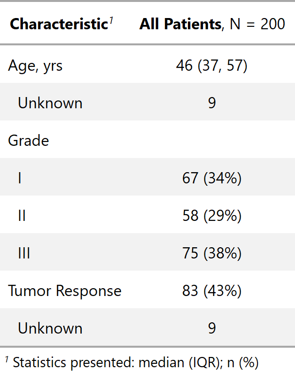
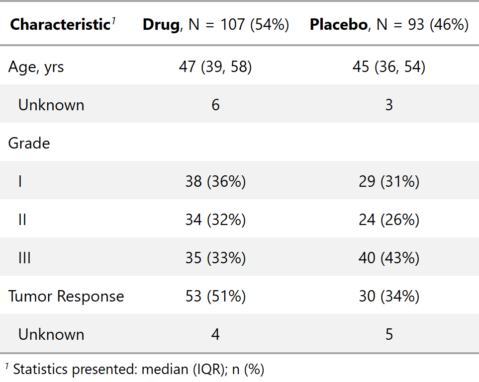

| cols_label_summary {gtsummary} | R Documentation |
Column labels can be modified to include calculated statistics, e.g. the N and percent within each group
cols_label_summary(x, stat_overall = NULL, stat_by = NULL)
x |
|
stat_overall |
string vector including text to appear above the overall summary
statistics. |
stat_by |
string vector of text to include above the summary statistics
stratified by a variable. The following fields are available for use in the
headers: |
Example 1

Example 2

Daniel D. Sjoberg
Other tbl_summary tools: add_comparison,
add_n, add_overall,
add_q.tbl_summary,
add_stat_label,
bold_italicize_labels_levels,
inline_text.tbl_summary,
tbl_summary
tbl_col_ex1 <-
trial %>%
dplyr::select(age, grade, response) %>%
tbl_summary() %>%
cols_label_summary(stat_overall = md("**All Patients**, N = {N}"))
tbl_col_ex2 <-
trial %>%
dplyr::select(age, grade, response, trt) %>%
tbl_summary(by = "trt") %>%
cols_label_summary(
stat_by = md("**{level}**, N = {n} ({style_percent(p, symbol = TRUE)})")
)